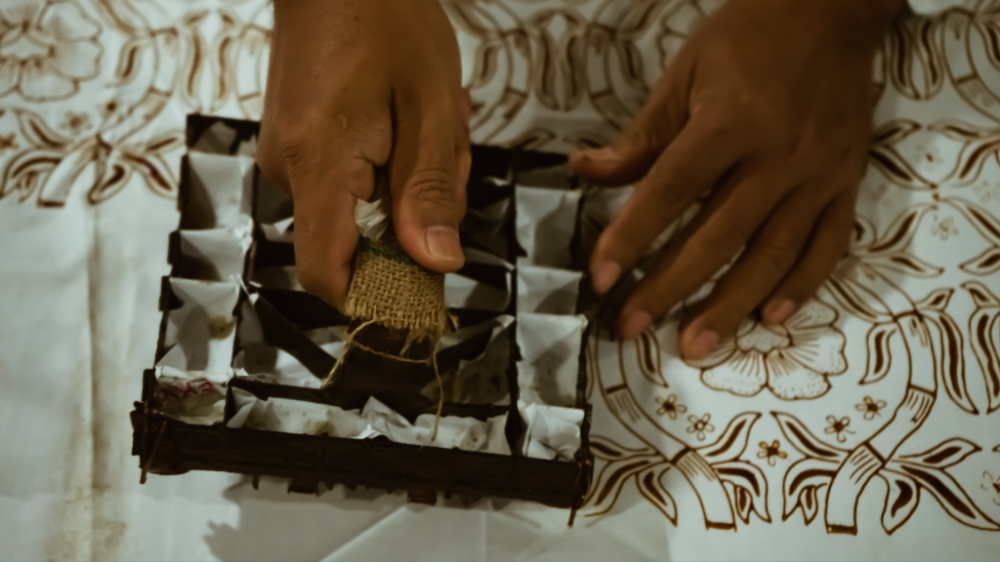

Warisan Dunia UNESCO
Batik, sebuah mahakarya budaya Indonesia yang diakui secara global. Lebih dari sekadar pakaian, Batik adalah narasi sejarah, filosofi, dan seni rupa.

Batik Tulis
Proses paling otentik menggunakan canting. Menghasilkan detail dan nilai seni tertinggi.

Batik Cap
Dibuat menggunakan cap tembaga. Proses yang lebih cepat namun tetap mempertahankan keindahan pola tradisional.
Batik Kombinasi
Gabungan teknik tulis dan cap untuk efisiensi waktu tanpa mengorbankan kualitas dan detail penting.